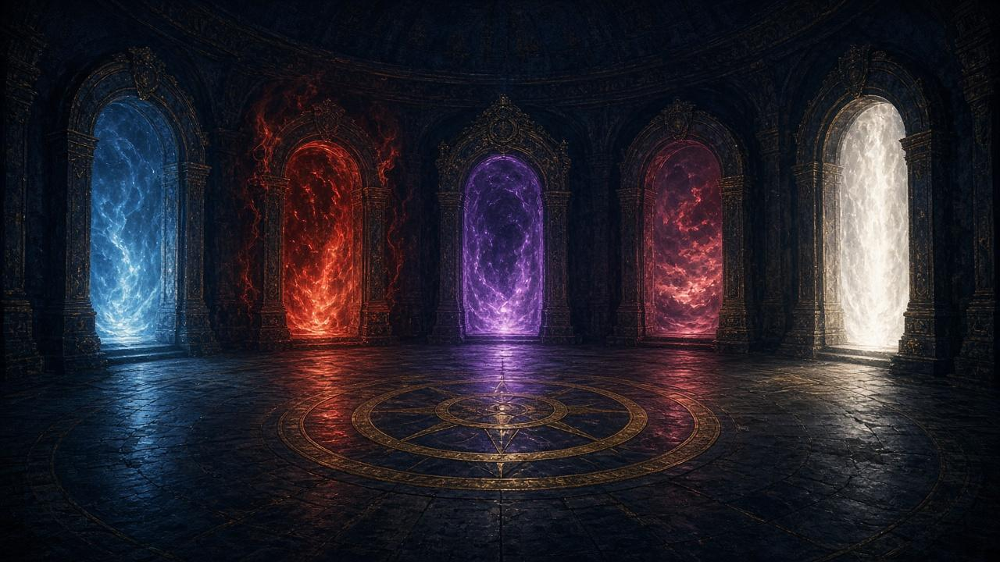
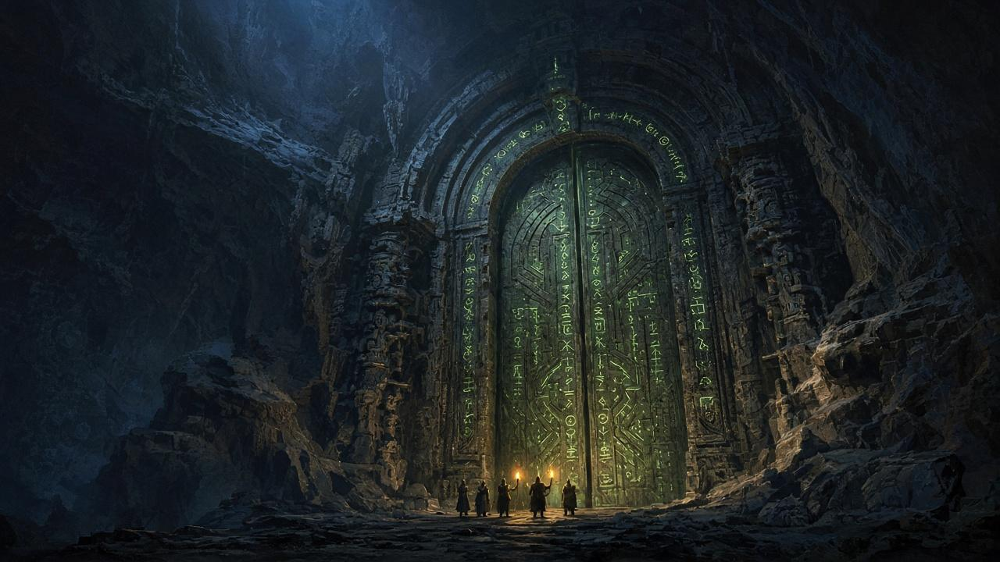
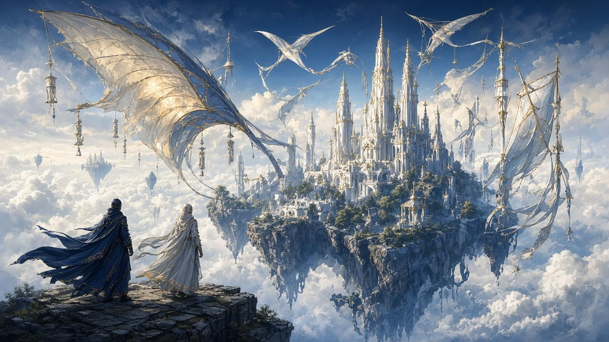
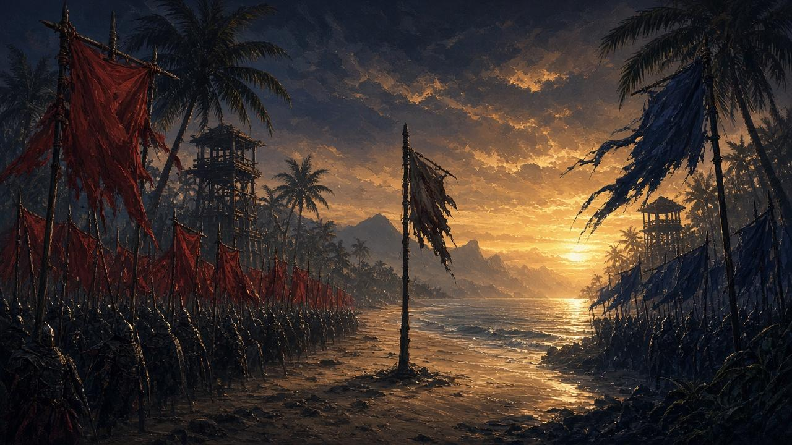
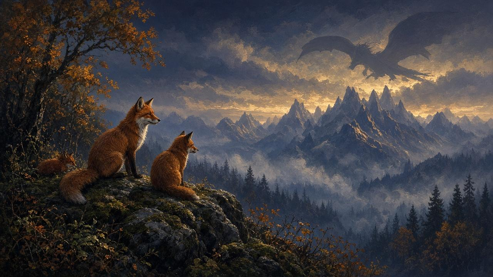

LE SAVOIR AU CŒUR DE L’AVENTURE
WoW Forever Wiki
Explorez les savoirs. Préparez votre aventure.
Une encyclopédie indépendante en construction : rien n’est publié sans sources vérifiées.
À la une
Les articles de fond, vérifiés et sourcés









Tous les articles





Vignettes : illustrations d’ambiance — ne constituent pas une source.
Explorez les archives
Choisissez votre voie
Toutes les rubriques
ENCYCLOPÉDIE EN CONSTRUCTION
Les premières pages restent à écrire
Aucune fiche de jeu n’est publiée à ce stade. Chaque contenu devra être sourcé et validé avant de rejoindre les archives.